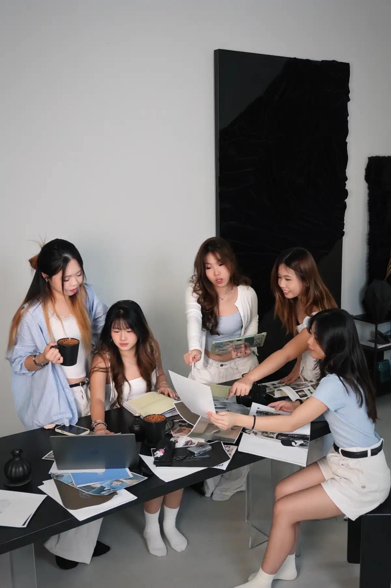

1 · Discovery & Alignment
We begin with a conversation to understand your brand, goals, audience, current challenges, and the kind of presence you want to build. This helps us see where your brand is now, and where we can take it with intention.